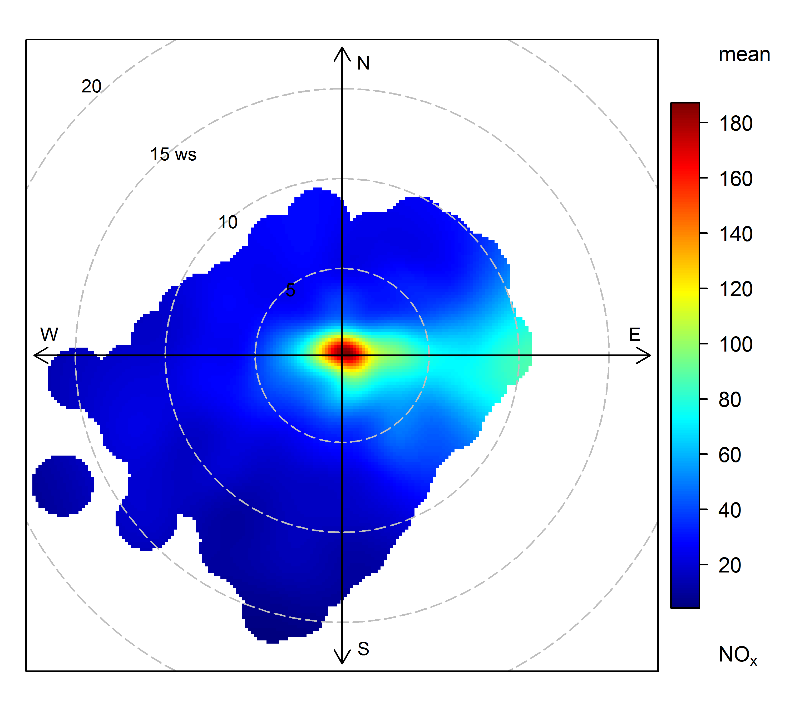

polarplotrThis document considers the use of bivariate polar plots applied to air pollution problems. Since the development of the openair package, which first made available the polarPlot function, there have been many further developments. These include:
This document summarises the main use of the polar plot functions with examples using real air quality data,
The polarPlot function plots a bivariate polar plot of concentrations. Concentrations are shown to vary by wind speed and wind direction.
For many, maybe most situations, increasing wind speed generally results in lower concentrations due to increased dilution through advection and increased mechanical turbulence. There are, however, many processes that can lead to interesting concentration-wind speed dependencies and we will provide a more theoretical treatment of this in due course. However, below are a few reasons why concentrations can change with increasing wind speeds.
Buoyant plumes from tall stacks can be brought down to ground-level resulting in high concentrations under high wind speed conditions.
Particle suspension increases with increasing wind speeds e.g. from spoil heaps and the like.
‘Particle’ suspension can be important close to coastal areas where higher wind speeds generate more sea spray.
The wind speed dependence of concentrations in a street canyon can be very complex: higher wind speeds do not always results in lower concentrations due to re-circulation. Bivariate polar plots are very good at revealing these complexities.
As Carslaw et al. (2006) showed, aircraft emissions have an unusual wind speed dependence and this can help distinguish them from other sources. If several measurement sites are available, polar plots can be used to triangulate different sources.
Concentrations of NO2 can increase with increasing wind speed — or at least not decline steeply due to increased mixing. This mixing can result in O3 -rich air converting NO to NO2.
For these examples use will be made of air quality data from the UK and surface meteorological data from the worldmet package, available here.
library(openair)
library(polarplotr)
library(dplyr)
library(worldmet)
# import data from London North Kensington
north_ken <- importAURN(site = "kc1", year = 2013)
# import met data for site Heathrow London (which is the default)
met <- importNOAA(year = 2013)
# merge together, drop model met from north_ken
north_ken <- inner_join(select(north_ken, -ws, -wd),
met, by = "date")We will also use data from a kerbside site (Marylebone Road).
# import data from London Marylebone Road
mary <- importAURN(site = "my1", year = 2013)
# merge together, drop model met from north_ken
mary <- inner_join(select(mary, -ws, -wd),
met, by = "date")Basic polar plot.
polarPlot(north_ken, pollutant = "nox", col = "jet")
Useful options for polarPlot include:
x, the variable for the radial axis (wind speed by default). The radial axis can be any numeric variable. The choice of variable depends on teh application but is usually chosen to help differentiate sources in some way e.g. air temperature or a measure of atmospheric stability.limits to set the colour scale limits e.g. limits = c(0, 100). This is useful for ensuring the same scale across different plots.k, which controls the smoothing parameter. Generally it is not necessary to adjust k but if there are too few data it can be difficult to fit a smooth surface. Reducing k e.g. to 50 or below might help produce a plot.Carslaw, D.C. and K. Ropkins, (2012). openair — an R package for air quality data analysis. Environmental Modelling & Software. Volume 27-28, 52-61.
Carslaw, D.C., Beevers, S.D, Ropkins, K and M.C. Bell (2006). Detecting and quantifying aircraft and other on-airport contributions to ambient nitrogen oxides in the vicinity of a large international airport. Atmospheric Environment. 40/28 pp 5424-5434.
Carslaw, D.C., & Beevers, S.D. (2013). Characterising and understanding emission sources using bivariate polar plots and k-means clustering. Environmental Modelling & Software, 40, 325-329. doi:10.1016/j.envsoft.2012.09.005
Uria-Tellaetxe, I. and D.C. Carslaw (2014). Source identification using a conditional bivariate Probability function. Environmental Modelling & Software, Vol. 59, 1-9. open access version.
Westmoreland, E.J., N. Carslaw, D.C. Carslaw, A. Gillah and E. Bates (2007). Analysis of air quality within a street canyon using statistical and dispersion modelling techniques. Atmospheric Environment. Vol. 41(39), pp. 9195-9205.
Grange, S. K., Lewis, A. C. and D. C. Carslaw (2016). Source apportionment advances with bivariate polar plots, correlation, and regression techniques. Atmospheric Environment. 145, 128-134. open access version.